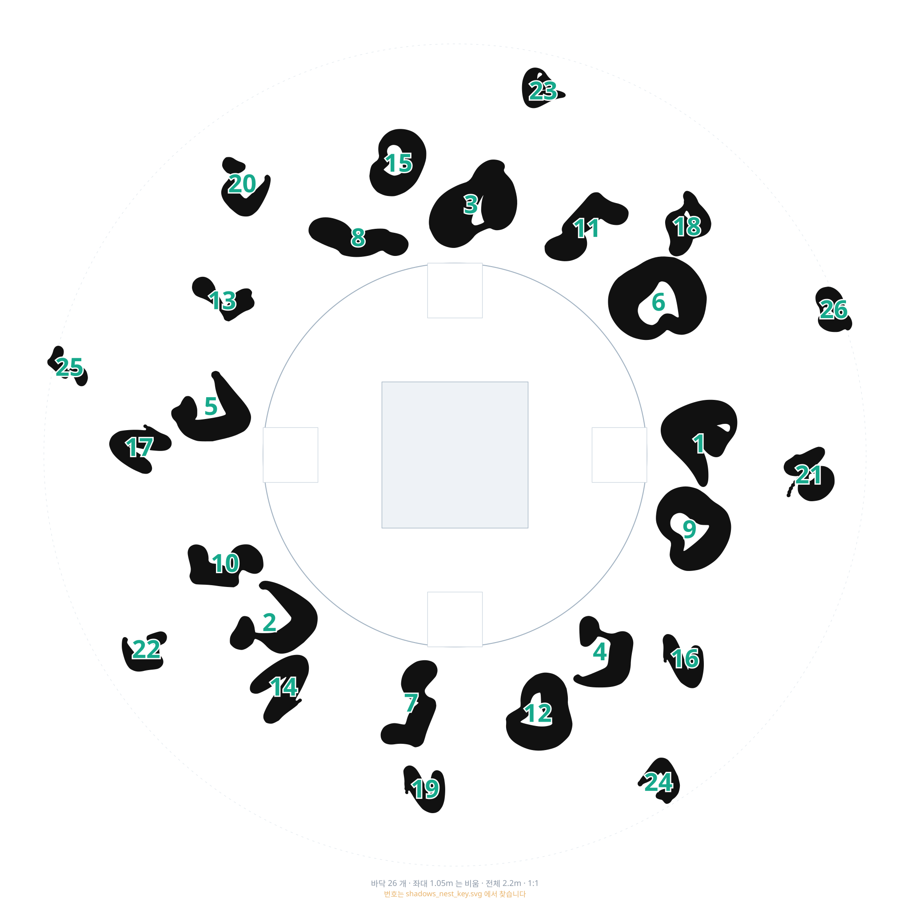
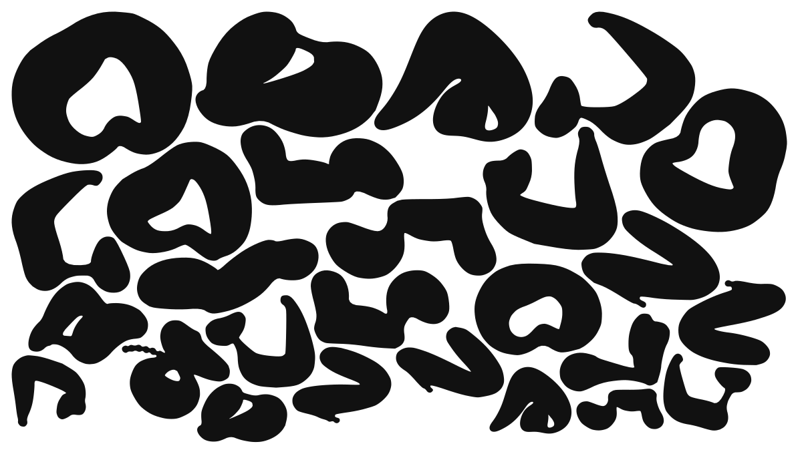
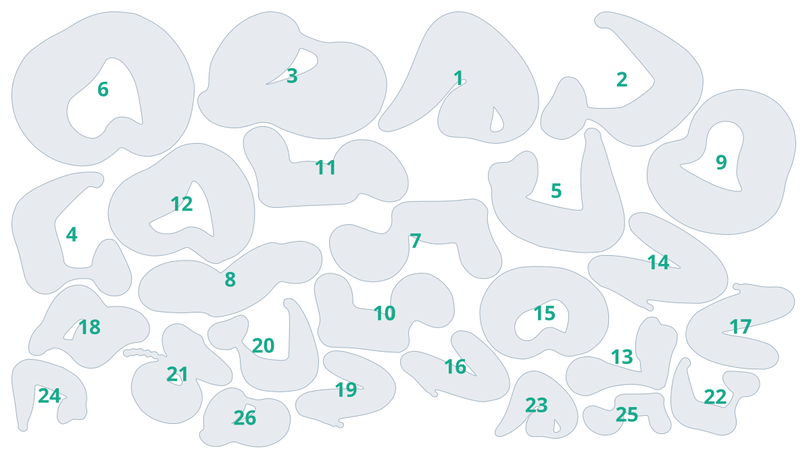

샹들리에 오브젝트를 위에서 본 실루엣입니다. 좌대 위에는 붙이지 않고, 좌대 둘레 바깥 바닥에서 시작해 사방으로 퍼집니다. 관객이 좌대를 돌면서 보기 때문에 앞뒤 없이 고르게 잡았습니다.
가운데 실선이 좌대 둘레, 흰 사각형 넷이 마커 자리, 바깥 가는 점선이 전체 범위입니다. 숫자는 커팅 한 장의 조각 번호입니다. 돌려 가며 붙였으므로 번호 찾기에서 그 번호를 찾아 같은 각도로 떼어 붙입니다. 이 파일은 보는 용도이고 커팅에 넣지 않습니다.

shadows_nest.svg바닥 조각 전부를 롤 폭 안에 모았습니다. 이것 하나만 커팅하면 됩니다. 자투리를 줄이려고 조각마다 각도를 돌리고 갈고리 안쪽까지 끼워 넣었습니다. 칼금이 되지 않도록 글자도 안내선도 넣지 않았습니다. 어느 게 몇 번인지는 바로 아래 번호 찾기에서 봅니다.

shadows_nest_key.svg위 커팅 한 장과 같은 자리입니다. 돌려 가며 붙였기 때문에 읽는 순서로는 번호를 알 수 없어 따로 냅니다. 이 파일은 커팅에 넣지 않습니다.

shadows_cut.svg 는 같은 조각을 실제 놓이는 자리 그대로 둔 것입니다.
3m 가 넘어 보통 커터에는 안 들어갑니다. 대형 커터가 있을 때만 씁니다.
shadows.json 은 web/venue.html 이 바닥에 깔아 보는 좌표입니다.